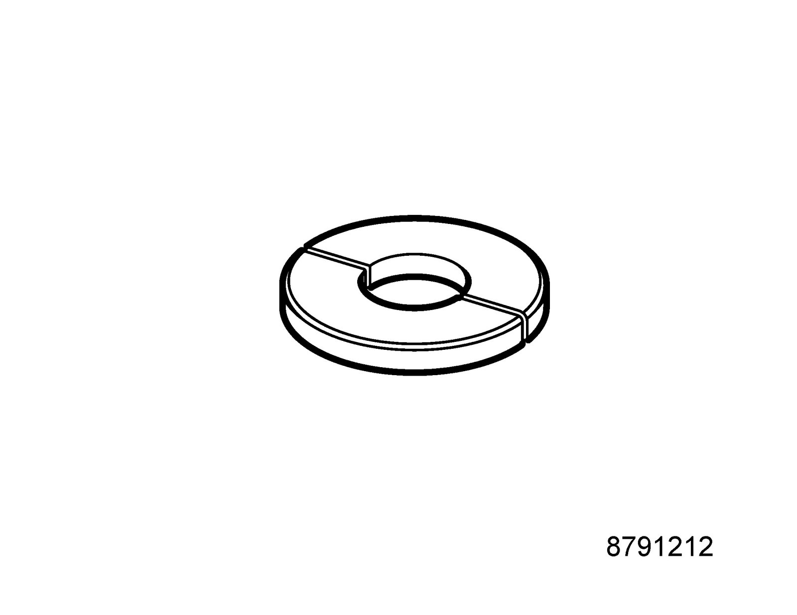
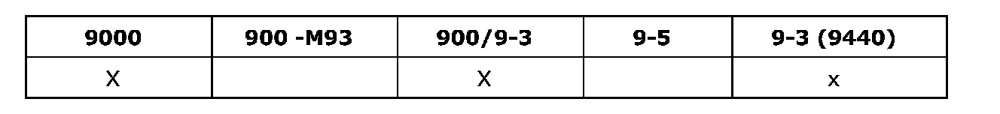

Operation CHARM
: Car repair manuals for everyone.
Home
>>
Saab
>>
2011
>>
9-3 FWD (9440) L4-2.0L Turbo
>>
Repair and Diagnosis
>>
Transmission and Drivetrain
>>
Drive Axles, Bearings and Joints
>>
Tools and Equipment
>>
87 91 212 Puller Ring
87 91 212 Puller Ring
87 91 212 Puller ring

Driver pipe and bearing, inboard drive shaft universal joint
86 12 830 Toolboard T4 Manual Gearbox
Group: Manual gearbox
